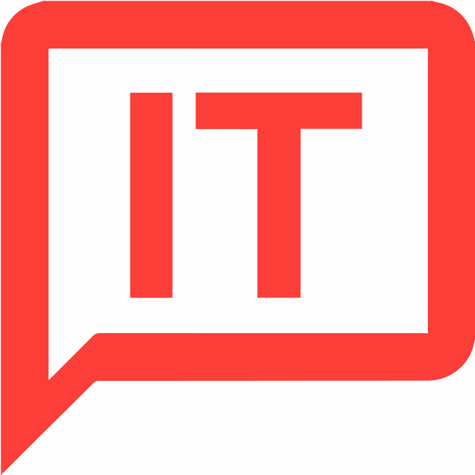

Theme 01: Basic Web

This theme our first project we where suppose to create a website, responsive website. That you could use on a computer and on mobile, not only did we make the website but also we got a art movement to use for the content but also as to get inspired by. I got the arts and crafts movement just click the logo and it will take you to the website.
Theme 02: Basic Content
In this theme we had to work as a group, where we made a treatment and a storyboard to professionalise the project. Then we made a XD prototype and tested the user experience of the product so we could move forward with the project. Then we created a website and included our own video production into it. What I learned was how important it is to work well as a team if we want the product done well. If you click the logo then it will take you to the final project of this theme.
Theme 03: Basic Animation

JavaScript, character design, storyline, group work, test and more was what I learned in this theme. This was the first time I used Javascript and well I can't lie it was difficult some part but still fun. I learned to use basic theories, methods and tools to design and develope a user interface, I used Illustrator and Photoshop that are programs that are used in a multimedia production. So I learned to use the central work areas as a multimedia designer; define, plan, design, implement and test a simple multimedia production. I found this theme both difficult but also really interesting and I surpriced myself in the programming part. What this theme also helped me to improve on my ability to teamwork, work with sketches, worksheet, storyboard, prototype and programming etc. If you click the logo then it will take you to the final interactive production of this theme.
Theme 04: Basic UX
User research, testing, interview technique, user flow, user task, business goals vs users objectives was some of the things we learned in this theme. Learning to understand the functionalities on websites, designing research; preperation, questionarie etc. Pitching and presenting your solution, learning basic theories, methods and tools for managing tests. Also I learned more about javascript frameworks and online tools for user testing and research. Teamwork was again part of this theme and it was more professional than the other themes. If you click the logo then it will take you to the Design sprint: Native app that my team did for this theme.